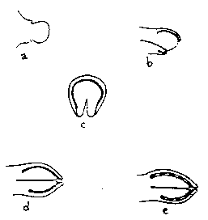
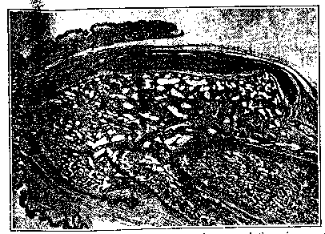
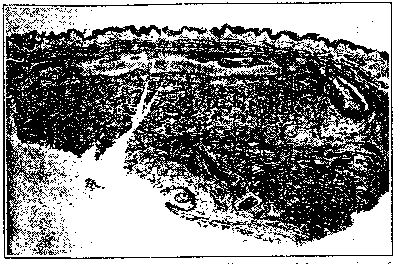
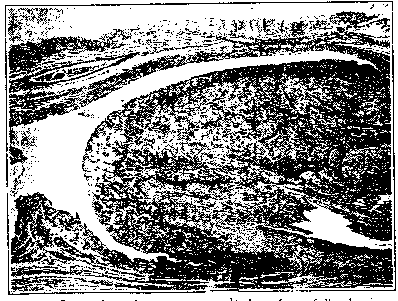
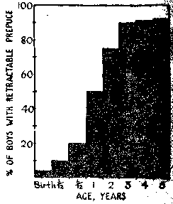

THE CIRCUMCISION REFERENCE LIBRARY
By
DOUGLAS GAIRDNER, D.M.,
M.R.C.P.
Consultant Paediatrician, United Cambridge
Hospitals
It is a curious fact that one of the operations most commonly performed in this country is also accorded the least critical consideration. In order to decide whether a child's foreskin should be ablated the normal anatomy and function of the structure at different ages should be understood; the danger of conserving the foreskin must then be weighed against the hazards of the operation, the mortality and after-effects of which must be known. Though tens of thousands of infants are circumcised each year in this country, nowhere are these essential data assembled. The intention of this paper is to marshal the facts required by those concerned with deciding the fate of the child's foreskin.
Male circumcision, often associated with analogous sexual mutilations of the female such as clitoric circumcision and infibulation, is practised over a wide area of the world by some one-sixth of its population. Over the Near East, patchily throughout tribal Africa, amongst the Moslem peoples of India and of South-East Asia, and amongst the Australasian aborigines circumcision has been regularly practised for as long as we can tell. Many of the natives that Columbus found inhabiting the American continent were circumcised. The earliest Egyptian mummies (2300 B.C.) were circumcised, and wall paintings to be seen in Egypt show that it was customary several thousand years earlier still.
According to Elliot Smith circumcision is one of the characteristic features of a "heliolithic" culture which, some 15,000 years ago, spread out over much of the world; others believe that the practice must have arisen independently among different peoples. In spite of the enormous literature on the subject (well summarized in Hasting's Encyclopaedia of Religion and Ethics), we remain profoundly ignorant of the origins and significance of this presumably sacrificial rite. The age at which boys are circumcised varies widely in different races, from the Mosaic practice of circumcising at about the eighth day, to the custom in many African tribes of making circumcision part of an initiation ceremony near the age of puberty. Circumcision was introduced into Roman Europe with Christianity; little is known about its status in mediaeval Europe, but it was probably customary only amongst adherents of the Jewish faith until, with the rise of modern surgery in the nineteenth century, its status changed from a religious rite to that of a common surgical procedure.
The prepuce appears in the foetus at eight weeks as a ring of thickened epidermis (Fig. 1, a) which grows forwards over the base of the glans penis (Fig. 1, b). It grows more rapidly on the upper surface than the lower, and so leaves the inferior aspect of the preputial ring deficient (Hunter, 1935). At 12 weeks the urethra still opens on the inferior aspect of the shaft of the penis and the terminal part of the urethra has yet to be constructed. Arrest at this stage produces the glandular type of hypospadias, with the ``hooded'' prepuce only partially covering the glans.

Fig. 1. - Development of prepuce (a) Eight
weeks; (b) sagittal section and (c) coronal section, 12
weeks; (d) 16 weeks; (e) at about term, compare Fig.
3.
From the inferior aspect of the glans a pair of outgrowths are pushed out and meet (the sulcus on the under aspect of the glans marks their fusion), so enclosing a tube which, becoming continuous with the existing urethra, advances the meatus to its final site. These outgrowths from the glans carry with them the prepuce on each side (Fig. 1, c), thus completing the prepuce inferiorly and forming the frenulum.
By 16 weeks the prepuce has grown forwards to the tip of the glans. At this stage (Fig. 1, d) the epidermis of the deep surface of the prepuce is continuous with the epidermis covering the glans, both consisting of squamous epithelium. By a process of desquamation the preputial space is now formed in the following manner (Deibert, 1933). In places the squamous cells arrange themselves in whorls, forming epithelial cell nests. The centres of these degenerate, so forming a series of spaces (Fig. 1, e); these, as they increase in size, link up until finally a continuous preputial space is formed. The stage of development which has been reached by the time the child is born varies greatly. Figs. 2, 3, and 4 show sections of the penis in three full-term newborn infants; in Fig. 2 separation of the prepuce has not yet begun; in Fig. 3 separation is partial; in Fig. 4 separation is complete, though this, as will be shown, is uncommon at birth.

Fig. 2. - Separation of prepuce has not begun and there is
as yet no preputial space.

Fig. 3. - Foci of desquamation leading to partial
separation of prepuce.

Fig. 4. - Separation of prepuce completed to form fully
developed preputial space.
[CIRP Note: Caution: Later studies have shown that Dr Gairdner's figures for increasing retractability after birth are not correct. See Normal Development of the Prepuce for more information.]
The Younger Child.-The prepuce is still in the course of developing at the time of birth, and the fact that its separation is usually still incomplete renders the normal prepuce of the newborn non-retractable. (It will be seen that preputial "adhesions" is an inapposite term to apply to the incompletely separated prepuce, suggesting as it does that the prepuce and glans were formerly separate structures.) The age at which complete separation of the prepuce with full retractability spontaneously occurs is shown in Fig. 5, which has been constructed from observations of the prepuce in a series of 100 newborns and about 200 boys of varying ages up to 5 years. Of the newborns, 4% had a fully retractable prepuce, in 54% the glans could be uncovered enough to reveal the external meatus, and in the remaining 42% even the tip of the glans could not be uncovered. Of the older group 10% had been circumcised and a few had at some time had their prepuce "stretched"; the figures from which the diagram is constructed are therefore not precise, but they indicate with sufficient accuracy that the prepuce is non-retractable in four out of five normal males of 6 months and in half of normal males of 1 year. By 2 years about 20% and by 3 years about 10% of boys still have a non-retractable prepuce.

The fact that at these ages non-retractability depends upon incomplete separation of the prepuce can be easily demonstrated by running a probe round the preputial space, gently completing its continuity. It will then be found that, although the prepuce is often somewhat tighter than in the adult, it is not tight enough to prevent retraction. This test was applied to a series of 54 boys aged from 2 months to 3 years who had been referred to hospital for circumcision, generally with a diagnosis of phimosis. In 53 of the 54 the prepuce became easily retractable by this simple manipulation; in one 5-months-old infant this manoeuvre failed because preputial separation had not advanced far enough to enable manipulation to complete the process. Although in this way the prepuce of nearly every infant can be rendered retractable, the procedure, necessarily involving the tearing apart of two as yet incompletely separated surfaces, causes some bleeding and opens the way to possible infection. For these reasons it is inadvisable as a routine procedure.
Prepuce of the Older Child. - Of 200 uncircumcised boys aged 5-13 years from three different schools, 6% had a non-retractable prepuce; in a further 14% the prepuce could be only partially retracted. In the majority of boys in this age group non-retractability depends upon the persistence of a few strands of tissue between prepuce and glans, so that minimal force is required to achieve retractability. In this age group, however, retraction of a hitherto unretracted prepuce discovers inspissated smegma, which, in contrast to that found in the younger child, is in some cases malodorous. This, together with the facts discussed under penile cancer, indicates that a different view ought to be taken of the non-retractable prepuce in the child over about 5 years, and that, whereas a non-retractable prepuce in the young child should be accepted with equanimity as normal, after about 3 years of age steps should be taken to render the prepuce of all boys retractable and capable of being kept clean.
It is often stated that the prepuce is a vestigial structure devoid of function. However, it seems to be no accident that during the years when the child is incontinent the glans is completely clothed by the prepuce, for, deprived of this protection, the glans becomes susceptible to injury from contact with sodden clothes or napkin. Meatal ulcer is almost confined to circumcised male infants, and is only occasionally seen in the uncircumcised child when the prepuce happens to be unusually lax and the glans consequently exposed (Freud, 1947).
Amongst the Western nations the circumcision of infants is a common practice only with the English-speaking peoples. It is, for the most part, not the custom in continental Europe or Scandinavia, or in South America. In England the collected data of various colleagues* who have kindly made observations on infants, school-children, and university students reveal wide variations as between different districts and between different social classes. For instance, in Newcastle-upon-Tyne 12% of 500 male infants aged 12 months were circumcised; in Cambridge the comparable figure was 31% of 89 male infants aged 6 to 12 months. Boys coming from the upper classes are more often circumcised, 67% of 81 13-year-old boys entering a public school had been circumcised, whereas only 50% of 154 boys aged 5 to 14 in primary and secondary schools in the rural districts of Cambridgeshire, and 30% of 141 boys aged 5 to 11 in primary schools in the town of Cambridge, had been circumcised. The influence of social class is shown also by some figures analysed by Sir Alan Rook from a group of university students. Whereas 84% of 73 students coming from the best-known public schools had been circumcised, this was so of only 50% of 174 coming from grammar or secondary schools. Either the boys of well-to-do parents are suffering circumcision much too often, or those of poorer parents not often enough.
In view of the wide difference in the incidence of circumcised males in different parts of the country, it is difficult to give an average figure for the whole country. A conservative estimate of 20%, which is above the rate for Newcastle-upon-Tyne but well below that for all the other groups quoted, would mean that the number of circumcisions performed on children in England and Wales is of the order of 90,000 annually.
Circumcision, like any other operation, is subject to the risks of haemorrhage and sepsis, and, where a general anaesthetic is employed, to the risk of anaesthetic death. The number of deaths presumed to be due to these causes is shown in the accompanying Table. The Registrar-General groups circumcision and phimosis together, but in view of the fact that "phimosis," as the term is commonly applied to infants, is physiological (see below) it is probable that the great majority of these deaths were attributable to operation rather than to any pathological condition necessitating operation.
| Under 1 Year | 1-4 Years | Total, Under 5 Years | |
|---|---|---|---|
| 1942 | 12 | 4 | 16 |
| 1943 | 10 | 7 | 17 |
| 1944 | 10 | 6 | 16 |
| 1945 | 15 | 2 | 17 |
| 1946 | 16 | 3 | 19 |
| 1947 | 9 | 1 | 10 |
About 16 deaths in children under 5 years occur each year from circumcision. In most of the fatalities which have come to my notice death has occurred for no apparent reason under anaesthesia, but haemorrhage and infection have sometimes proved fatal.
Haemorrhage is not uncommon after circumcision. F. J. W. Miller and S. D. Court (1949, personal communication), who followed 1,000 infants in Newcastle-upon-Tyne for their first year, found that 58 were circumcised, and two of these bled sufficiently to require blood transfusion. In my own experience about two out of every 100 children circumcised as hospital out-patients will be admitted on account of haemorrhage or other untoward event. Blood losses in the first year are particularly apt to lead to anaemia, and several infants have been seen with severe iron-deficiency anaemia following haemorrhages after circumcision.
Reference has already been made to meatal ulcer, which, in so far as it is so much more frequent in circumcised male infants, should be counted a sequel of the operation.
The surprising variety of reasons why different doctors advise circumcision and other operations and manipulations on the prepuce can be found described in the long correspondence on the subject which ran in the British Medical Journal from August to November, 1935. Circumcision is sometimes undertaken in order to cure existing pathological conditions, sometimes in order to prevent various diseases from occurring at a much later date.
Since in the newborn infant the prepuce is nearly always non-retractable, remaining so generally for much of the first year at least, and since this normal non-retractability is not due to tightness of the prepuce relative to the glans but to incomplete separation of these two structures, it follows that phimosis (which implies a pathological constriction of the prepuce) cannot properly be applied to the infant. Further, the commonly performed manipulation known as "stretching the foreskin" by forcibly opening sinus forceps inserted in the preputial orifice cannot be justified on anatomical grounds, besides being painful and traumatizing. In spite of the fact that the preputial orifice often appears minute - the so-called pin-hole meatus - its effective lumen, when tested by noting whether or not a good stream of urine is passed, is almost invariably found to be adequate.
Infants with umbilical or inguinal hernia are particularly liable to suffer circumcision on account of ``phimosis,'' but if this simple test is applied, rarely will any obstruction to the urinary flow be found present. Occasionally the preputial orifice is imperfectly related to the external meatus, so that the urinary stream balloons out the subpreputial space; this can be easily remedied by gently separating the prepuce from the glans in the region of the meatus by means of a probe. True phimosis causing urinary obstruction has been described (Campbell, l948), but must be exceedingly rare: in the cases I have seen in which this diagnosis has been made, simple separation of the prepuce has shown that there was no constriction of the preputial tributable to operation rather than to any pathological orifice.
Through ignorance of the anatomy of the prepuce in infancy, mothers and nurses are often instructed to draw the child's foreskin back regularly, on the supposition that stretching of the foreskin is what is required. I have on three occasions seen young boys with a paraphimosis caused by mothers or nurses who have obediently carried out such instructions; for, although the size of the prepuce does allow the glans to be delivered, the fit is often a close one and slight swelling of the glans, such as may result from forceful efforts at retraction, may make its reduction difficult.
Inflammation of the glans is uncommon in childhood when the prepuce is performing its protective function. Posthitis - inflammation of the prepuce - is commoner, and it occurs in two forms. One form is a cellulitis of the prepuce; this responds well to chemotherapy and does not seem to have any tendency to recur; hence it is questionable whether circumcision is indicated. More often inflammation of the prepuce is part of an ammonia dermatitis affecting the napkin area. The nature of this condition was firmly established by Cooke in 1921, bit is still not universally known. The urea-splitting Bact. ammoniagenes (derived from faecal flora) acts upon the urea in the urine and liberates ammonia. This irritates the skin, which becomes peculiarly thickened, while superficial desquamation produces a silvery sheen on the skin as if it were covered with a film of tissue paper. Such appearances are diagnostic of ammonia dermatitis, and inquiry will confirm that the napkins, particularly those left on through the longer night interval, smell powerfully of ammonia. Treatment consists in impregnating the napkins with a mild antiseptic inhibiting the growth of the urea-splitting organisms. For this purpose boric acid powder sprinkled over the napkins, or a rinse of 1 in 4,000 mercuric chloride or of the recently introduced non-toxic substance "diaparene" (Benson et al., 1949), are gratifyingly effective.
When involved in an ammonia dermatitis the prepuce shows the characteristic thickening of the skin, and this is often labelled a "redundant prepuce" - another misnomer which may serve as a reason for circumcision. The importance of recognizing ammonia dermatitis lies in the danger that if circumcision is performed the delicate glans, deprived of its proper protection, is particularly apt to share in the inflammation and to develop a meatal ulcer. Once formed, a meatal ulcer is often most difficult to cure.
A number of symptoms of obscure cause, such as enuresis, masturbation, habit spasm, night terrors, or even convulsions, have from time to time been attributed to phimosis, and circumcision has been advised. No evidence exists that a prepuce whose only fault is that it has not yet developed retractability can cause such symptoms.
It may be apposite at this stage to quote the reasons given by the mother for desiring her child's circumcision in a series of 54 infants referred to hospital by a doctor. In 39 infants the reason was a symptomless ``phimosis'' found on routine inspection by doctor, nurse, mother, or neighbour. In nine cases it was said that ``he cries when he wets'': five of these proved to be due to ammonia dermatitis; closer questioning of the others revealed either no connexion between when the baby cried and when he urinated, or merely that crying often started micturition. In these three cases the foreskin was judged to be too long or redundant, and in a further three the reason was even more frankly cosmetic ("it looks funny") or was intangible ("we believe in it"). As has been stated earlier, in all except one of this group of 54 infants, phimosis was disproved, in so far as gentle manipulation enabled the prepuce to be retracted.
Universal circumcision of male infants has been urged as a means of preventing the later development of a variety of conditions - paraphimosis, venereal diseases, penile cancer, and cervical cancer of women.
Some idea of the importance of paraphimosis can be gained from figures from the Royal Victoria Infirmary, Newcastle-upon-Tyne, a hospital serving a large population in which, as has been mentioned, infants are circumcised less often than in the country generally. In the children's wards paraphimosis accounts for about seven out of a total of 800 male child admissions each year (0.9%); an appreciable number of these are found to be the result of the mother's obeying misguided instructions to retract her infant's prepuce forcibly. In the adult wards it accounts for about 10 out of a total of 5,000 male surgical admissions (0.1%), so that paraphimosis scarcely constitutes an important hazard to the uncircumcised male.
Although there is a common belief that the circumcised man runs a lessened risk of venereal infection, particularly syphilitic, there are few figures to support this. Lloyd and Lloyd (1934), who reviewed the published evidence and analysed their own figures, concluded that circumcision did not diminish the chance of a syphilitic chancre. Schrek and Lenowitz (1947) found that hospital patients gave a history of venereal disease equally often whether circumcised or not. Wilson (1947) has published figures showing that, of the men attending a Canadian Army venereal disease centre, the proportion of uncircumcised solders (77%) was higher than in the Canadian Army generally (52%), and concluded that the uncircumcised soldier is more prone to venereal infection. It may be, however, that since circumcision of infants is de rigueur in Canada, the uncircumcised man will tend to come from a lower social grade and thus to be more likely to expose himself to infection. The evidence seems scarcely to warrant universal circumcision as a prophylactic against venereal infection.
This subject merits careful appraisal, for it alone, of the medical reasons commonly advanced for the universal circumcision of infants is capable of withstanding critical scrutiny. In England and Wales deaths from penile cancer number about 150 a year. The relation between this disease and antecedent circumcision has recently been reviewed by Kennaway (1947). All observers agree that circumcision in the first five years of life protects absolutely from penile cancer, and this applies not only to one group such as the Jewish but equally to the mixed races of the U.S.A. The reason for this preventive effect of early circumcision is not known: it is not due to removal of the cancer-bearing area since the usual site of penile cancer, the sulcus behind the glans, is retained. If it is due to retained smegma or its decomposition products being carcinogenic, this effect must be of startling potency, since circumcision after the fifth year fails to prevent cancer occurring several decades later.
A clue to the problem may lie in the exceptionally low hygienic standards of patients with penile cancer, which has struck several observers. Dean (1935), reviewing 120 cases, writes: "Men with penis cancers gave the impression of being less intelligent, as a class, than other cancer patients. Not only had the majority ignored for long periods the precancerous state of physical annoyance, filth, and odoriferous discharges, but also it was not unusual for many to delay seeking advice until a large part of the penis bad become affected with an ulcerating growth." The unusual frequency with which patients with penile cancer have had venereal disease has been demonstrated by Dean (1935) and by Schrek and Lenowitz (1947), these authors having come to the conclusion that this fact indicates again the significantly low standard of social hygiene of these patients. A further factor frequently present in patients with penile cancer is phimosis; although this is often the result of the growth, in many patients the prepuce has never been retractable (Lewis, 1931).
With these facts it may reasonably be contended that, if the uncircumcised male has a prepuce which he can retract and which he keeps clean, he is likely to enjoy the same immunity from penile cancer as his circumcised brother.
The low incidence of cervical cancer among Jewesses has led Handley (1947) to the conclusion that this disease is mainly caused by the introduction of irritant material by the uncircumcised husband during coitus. It should be a simple matter to put this theory to the test by noting whether the husbands of women with cervical cancer are more frequently uncircumcised than others. Meanwhile the evidence seems insufficient to warrant universal circumcision or preputiotomy, such as Handley advocates.
There remain a number of more or less trivial factors which are sometimes mentioned as reasons why infant circumcision is desirable: difficulties in keeping the uncircumcised parts clean, or the supposed aesthetic or erotic superiority of the shorn member. In order to fulfil the intention of this paper an inquiry on these points should have been made amongst a group of uncircumcised men. This was not attempted, although with regard to the last two of the factors mentioned it should be stated that whenever the subject has been broached in male company those still in possession of their foreskin have been forward in their insistence that any differences which may exist in such matters operate emphatically to their own advantage.
Moreover, if there were sensible disadvantages in being uncircumcised, one would expect that the fathers of candidates for circumcision would sometimes register their feelings in the matter. Yet in interviewing the parents of several hundred infants referred for circumcision I have met but one father who wished his son circumcised because of his disagreeable experience of the uncircumcised state. The rest of the fathers were equally indifferent about the matter whether they themselves had been circumcised or not. Indeed, so little did the father's personal experience seem important that one-quarter of the mothers did not even know whether their husbands were or were not circumcised. These facts provide some evidence that few uncircumcised men have cause to regret their state.
It has been shown that, since during the first few year of life the prepuce is still in process of developing, it is impossible at this period to determine in which infants the prepuce will attain normal retractability. In fact, only about 10% will fail to attain this by the age of 3 years. Of this 10% of 3-year-old boys, in most it will be found a simple matter to render the prepuce retractable by completing its separation from the glans by gentle manipulation. In a very few this may prove impossible and circumcision might then be considered a justifiable precaution.* * Higgins (1949), with long experience of paediatric urology, also concludes that circumcision should not be considered until "after the age of, say, 2 to 3 years."
The prepuce of the young infant should therefore be left in its natural state. As soon as it becomes retractable, which will generally occur some time between 9 months and 3 years, its toilet should be included in the routine of bath time, and soap and water applied to it in the same fashion as to other structures, such as the ears, which are customarily treated with special assiduousness on account of their propensity to retain dirt. As the boy grows up he should be taught to keep his prepuce clean himself, just as he is taught to wash his ears. If such a procedure became customary the circumcision of children would become an uncommon operation. This would result in the saving of about 16 children's lives lost from circumcision each year in this country, besides saving much parental anxiety and an appreciable amount of the time of doctors and nurses.
The development of the prepuce is incomplete in the newborn male child, and separation from the glans, rendering it retractable, does not usually occur until some time between 9 months and 3 years. True phimosis is extremely rare in infancy.
During the first year or two of life, when the infant is incontinent, the prepuce fulfils an essential function in protecting the glans. Its removal predisposes to meatal ulceration.
The many and varied reasons commonly advanced for circumcising infants are critically examined. None are convincing.
Though early circumcision will prevent penile cancer, there is reason to suppose that keeping the prepuce clean would have a like effect in preventing this disease.
In the light of these facts a conservative attitude towards the prepuce is proposed, and a routine for its hygiene is suggested. If adopted this would eliminate the vast majority of the tens of thousands of circumcision operations performed annually in this country, along with their yearly toll of some 16 child deaths.
My thanks are due to Dr. A. M. Barrett for pathological facilities.
Benson, R. A., Slobody, L. B., Lillick,
L., Maffia, A., and Sullivan, N. (1949). J. Pediat.,
34, 49.
Campbell, M. F. (1948). In Brennemann's Practice of
Pediatrics, vol. 3, chap. 30, p. 34. Hagerstown.
Cooke, J. V. (1921). Amer. J. Dis.
Child., 22, 481.
Dean, A. L. (1935). J. Urol., 33, 252.
Deibert, G. A. (1933).
Anat. Rec., 57, 387.
Freud, P. (1947).
J. Pediat., 31, 131.
Handley, W. S. (1947). British Medical
Journal, 2, 841.
Higgins, T. T. (1949). In Garrod, Batten, and Thursfield's
Diseases of Children, 2, 462. London.
Hunter, R. H. (1935). J. Anat., 70,
68.
Kennaway, E. L. (1947). Brit. J. Cancer, 1,
335.
Lewis, L. G. (1931). J. Urol., 26,
295.
Lloyd, V. E., and Lloyd, N. L. (1934).
British Medical Journal, 1, 144.
Schrek, R., and Lenowitz, H. (1947). Cancer Res.,
7, 180.
Wilson, R. A. (1947). Canad. med. Ass.
J., 56, 54.
*Dr. H. P. Broda, assistant school M.O., Cambridge; Dr. Eileen Brereton, assistant school M.O., Cambridgeshire; Drs. F. J. W. Miller and S. D. Court, Child Health Department, King's College, Newcastle-upon-Tyne; Dr. Margaret Patterson, assistant M.O.H., Cambridge; Sir Alan Rook, senior health officer, Cambridge University; Dr. R. E. Smith, medical officer to Rugby School. It is a pleasure to record my thanks to all these colleagues for their ready co-operation and many painstaking observations, and for generously allowing me to quote their findings.
http://www.cirp.org/library/general/gairdner/